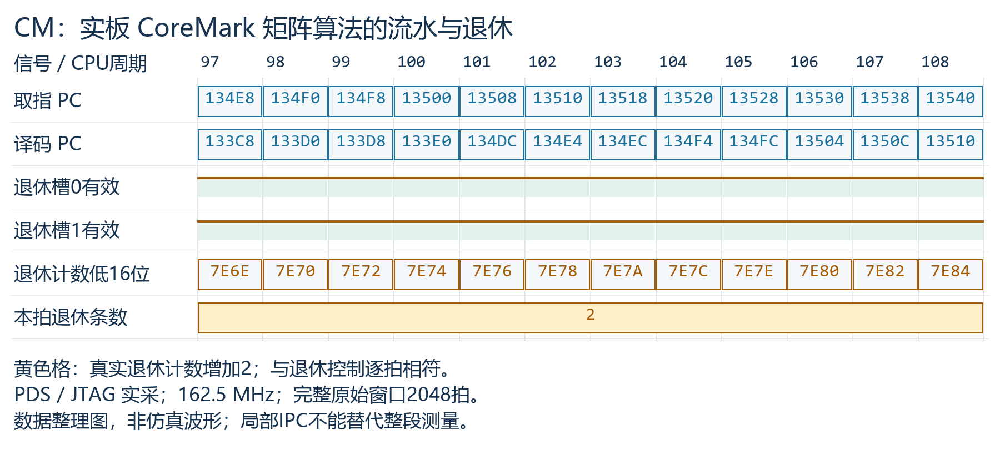
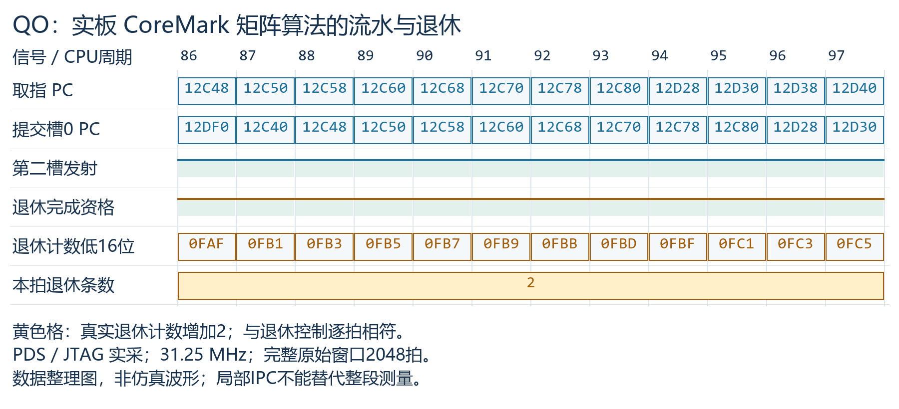
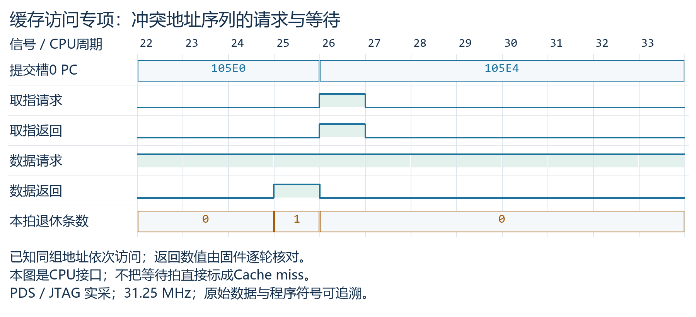
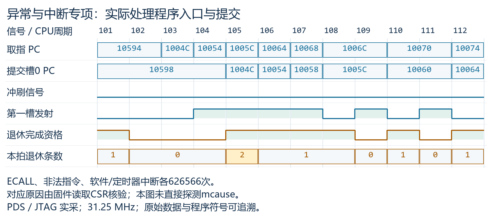
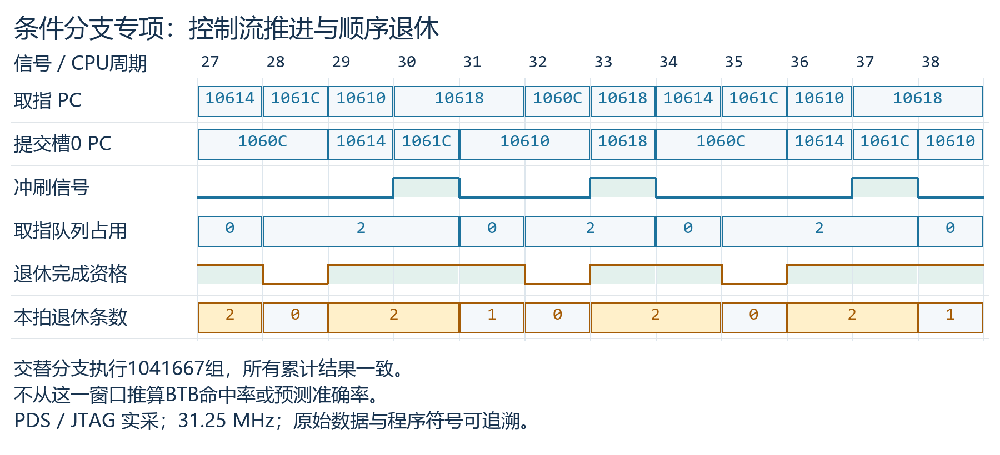
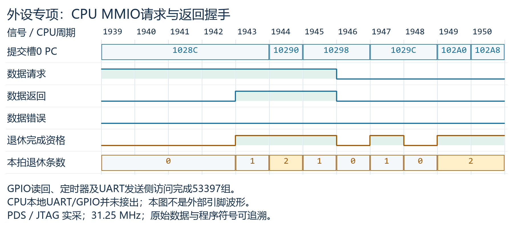
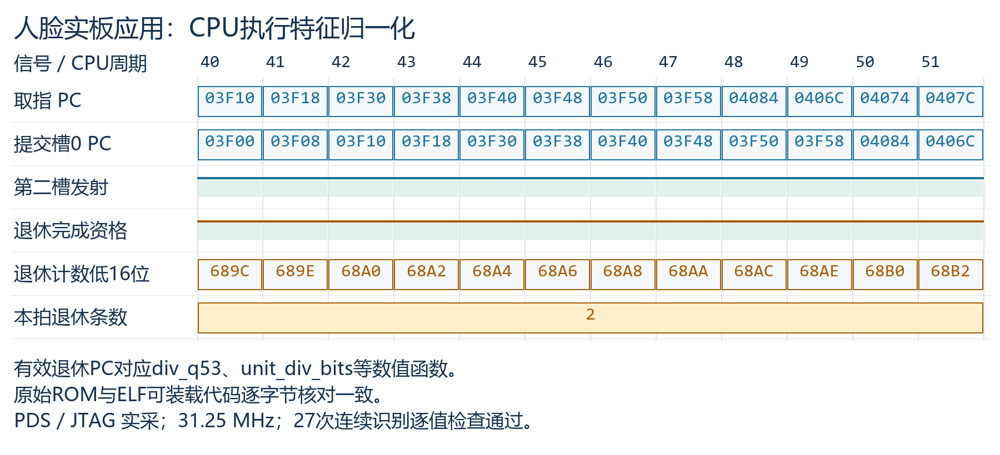
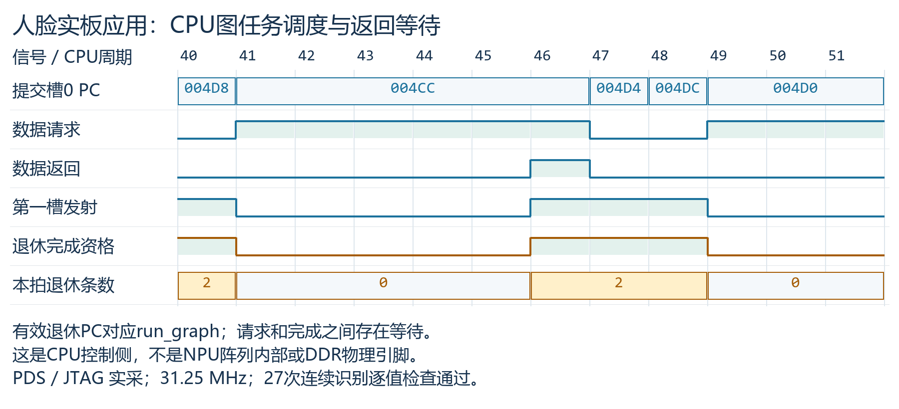

2026-11-02 · PDS Fabric Debugger · 点击图片查看原尺寸
CM/coremark/window1/samples.csv，采样 97–108

QO/coremark/window0/samples.csv，采样 86–97

QO/diagnostics/test1/window0/samples.csv，采样 22–33

QO/diagnostics/test2/window0/samples.csv，采样 101–112

QO/diagnostics/test3/window0/samples.csv，采样 27–38

QO/diagnostics/test4/window0/samples.csv，采样 1939–1950

QO/face/window1/samples.csv，采样 40–51

QO/face/window2/samples.csv，采样 40–51
